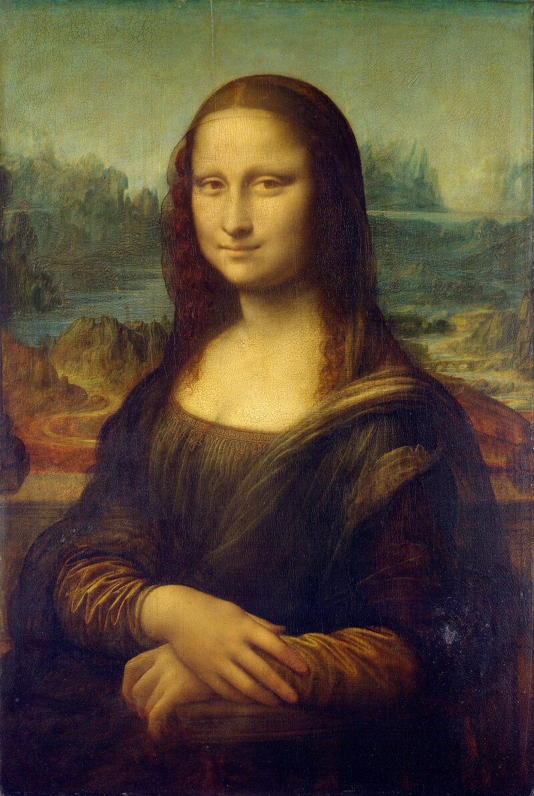
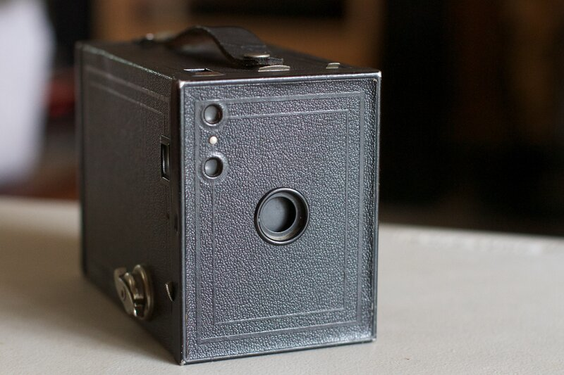
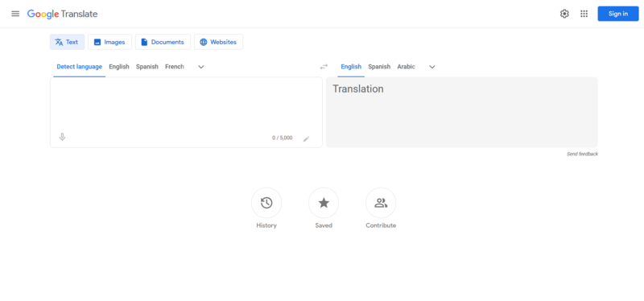
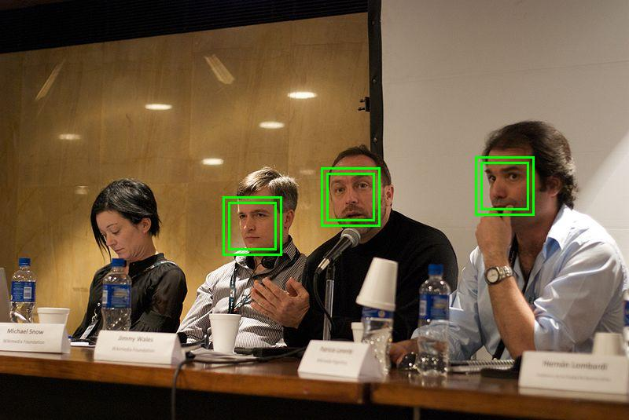

De Prompts a Agentes:
A Nova Era da IA
Da estatística preditiva à revolução dos sistemas autônomos e produtos com inteligência artificial.
O Roteiro da Nossa Jornada
Três Paixões que Movem Minha Vida
Onde a IA Age na Minha Rotina?
Caso Real: A Plataforma Playground
Como agentes de IA aceleraram o desenvolvimento de uma ferramenta interativa para alunos iniciantes.
- • Instalações complexas de Node.js, compiladores e variáveis de ambiente.
- • Frustração precoce antes mesmo de entender a lógica de programação.
- • Evasão de estudantes nas primeiras semanas de aula.
- • Editor interativo de HTML, CSS e JavaScript direto no browser.
- • Feedback visual instantâneo do código em tempo real.
- • Agentes de IA gerando desafios progressivos e corrigindo sintaxe.
O Retrato no Século XIX (1820 - 1830)

1839: O Surgimento da Fotografia
Louis Daguerre apresenta o Daguerreótipo à Academia de Ciências de Paris.
— Paul Delaroche, pintor francês (1839)
Da Kodak aos Smartphones: Retratos Para Todos
Como a tecnologia transferiu o poder de registrar a face humana do ateliê aristocrático para as mãos das famílias comuns.

Ferramentas do Pintor vs. Ferramentas da IA
| Fase Histórica | No Mundo da Pintura | No Mundo da Inteligência Artificial | Papel Humano |
|---|---|---|---|
| 1. Artesanal | Moer minérios e preparar tintas e telas à mão no ateliê | Escrita de código linha a linha e fórmulas estatísticas rígidas | Operador braçal (100% manual) |
| 2. Auxiliar | Tinta em tubo (1841) e Câmera Kodak ("aperte o botão") | Era dos Prompts: o modelo gera textos/códigos soltos | Operador que copia, cola e valida na mão |
| 3. Agentes | A câmera assume a cópia; artista foca em novos movimentos | Era dos Agentes: a IA executa tarefas inteiras ponta a ponta | Arquiteto e Orquestrador |
Origens da IA: O Uso Militar e Balística
A IA Chega aos Aplicativos do Cotidiano


A IA Generativa que Mudou Tudo
A arquitetura Transformer (Google, 2017) quebrou as barreiras da computação analítica.
- • Calculava a distância de um míssil militar.
- • Previa se uma transação era fraude ou não (0 ou 1).
- • Traduzia palavras isoladas em tabelas rígidas.
- • Incapaz de criar raciocínio novo ou contextual.
- • Compreende e gera linguagem natural fluida.
- • Escreve código completo de programação do zero.
- • Raciocina sobre múltiplos conceitos simultâneos.
- • Aberta a qualquer pessoa pelo navegador via prompts.
O Choque do Código em PHP (Fim de 2022)
Pedi ao GPT-3.5 uma rotina completa de backend em PHP: conexão PDO com banco de dados, sanitização e tratamento de exceções.
Resultado: Código gerado em 5 segundos, limpo e funcionando perfeitamente.
Gravei um vídeo no dia com a sensação clara de que a programação nunca mais seria a mesma.
O GitHub Copilot popularizou a IA dentro dos editores de código (VS Code).
Um super "autocompletar" que sugeria a próxima linha.
Porém: ainda exigia que o programador verificasse, corrigisse e integrasse cada linha manualmente.
A Fadiga do "Prompt Engineering"
O modelo de chat tradicional transformou o ser humano num estagiário de copia e cola.
O que é, de fato, um Agente de IA?
Um sistema centrado em um modelo de raciocínio, dotado de autonomia de execução no mundo real.
O Loop ReAct: Pensar, Agir e Observar
├── PENSAR: Preciso inicializar o projeto, instalar dependências e criar o banco.
├── AGIR: Executa `npm init -y && npm install express bcryptjs jsonwebtoken`.
├── OBSERVAR: Terminal acusou versão incompatível de dependência.
├── CORRIGIR: Ajusta versão no `package.json` e reexecuta a instalação.
└── FINALIZAR: Roda os testes unitários (`npm test`) e entrega tudo verde (passando)!
Na era dos agentes: você orienta a IA a fazer, testar e garantir.
Por Dentro do Motor: O que é um IA Harness?
A estrutura de sustentação que conecta o modelo ao computador real com total segurança.
Chat com UI vs. Ambiente com Agentes
| Critério Operacional | Chat Tradicional (Web UI) | Harness com Agentes (Nova Era) |
|---|---|---|
| Ambiente de Ação | Fica restrito a uma página de texto no navegador | Lê e altera arquivos diretamente no computador do projeto |
| Execução Prática | Simulada ou puramente conceitual | Executa comandos reais de terminal e compilação |
| Resolução de Falhas | Usuário precisa copiar o erro do terminal e colar de volta | O agente lê o retorno de erro e se auto-corrige em loop |
| Contexto Global | Fragmentado e limitado a cada mensagem avulsa | Indexa e compreende o projeto inteiro e suas conexões |
| Papel do Humano | Transportador mecânico de dados (copia e cola) | Arquiteto, Decisor Estratégico e Revisor |
Como Pessoas e Empresas Faturam com IA
Situações reais de monetização sem necessidade de conhecimento pleno em programação.
Caso Real: R$ 100 Mil em 24 Horas com IA
Como Bruno César (20 anos, estudante da UFRN) faturou R$ 100 mil em um único dia nas Eleições 2026 usando IA e APIs públicas.
4 Desafios Práticos com Agentes de IA
O Papel do "Orquestrador de Inteligências"
Perguntas & Respostas Frequentes
O Futuro Não se Espera.
Ele se Orquestra.
Obrigado pela presença de todos nesta jornada de prompts a agentes!